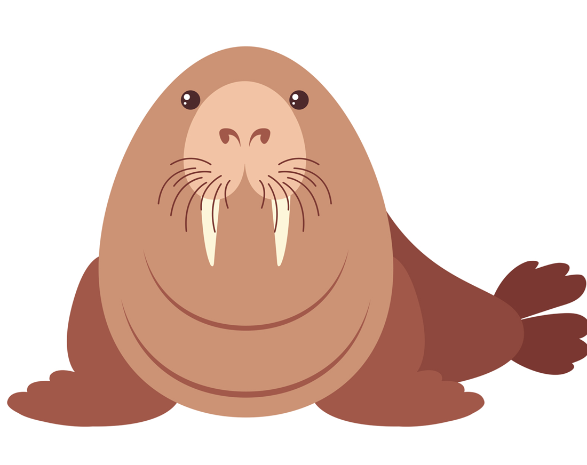

Walrus

Walruses have long tusks and a prominent mustache. These large
marine mammals are found near the Arctic Circle. They are extremely social and snort and bellow loudly at their companions. During the mating season they are quite aggressive.
Walruses have an air sac under their throat, which helps them float in the water so they can sleep!